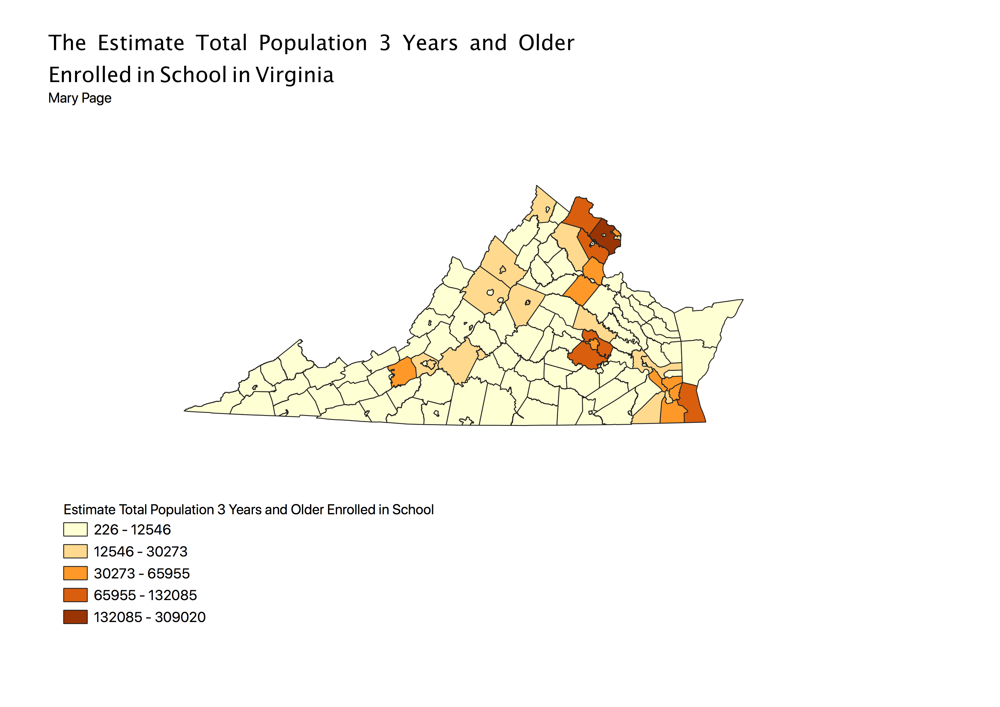

Homework 7: Census data choropleth
Mary Page
In this map I used EPSG: 2283 (NAD83/Virginia North (ftUS)). This map shows the estimated total of the state of Virginia's Population that is 3 years and older enrolled in school by county. This encludes pre-school, k-12, undergraduate, and graduate students. As seen in the choropleth map, most of the counties have between 226-12,546 students that are 3 years old or older enrolled in school. Albemarle and Charlotesville Counties have more students than most of the state, ranging between 12,546-30,273 enrolled students. Montgomery County has even more enrolled students, ranging from 30,273-65,955 students. These counties having more enrolled students make sense, as UVA is located in Albemarle and Charlotesville counties, and Virginia Tech is located in Montgomery County. Furthermore, it makes sense that Montgomery County has more students than Albemarle/Charlottesville Counties as Virginia Tech has around 35,000 students and UVA has around 25,000 students. It also makes sense that the Northern Counties located in the suburbs of Washington D.C. have higher numbers of enrolled students, as those are densely populated counties.

Data used for this project
CSV dataset
Link to shapefile